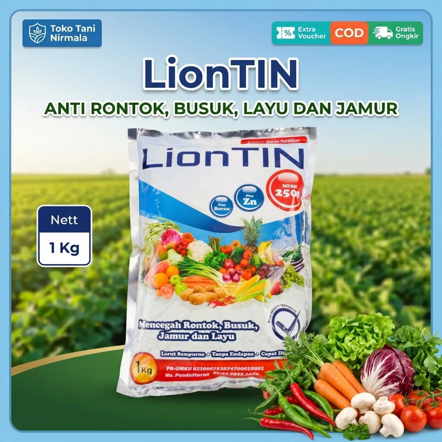
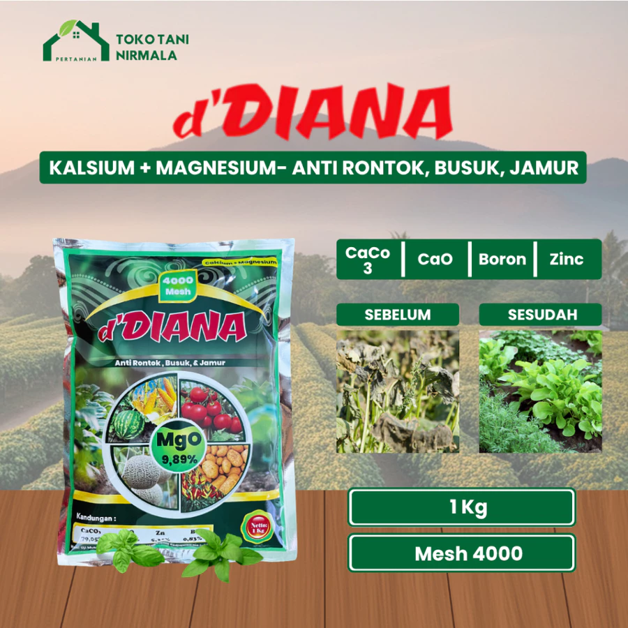
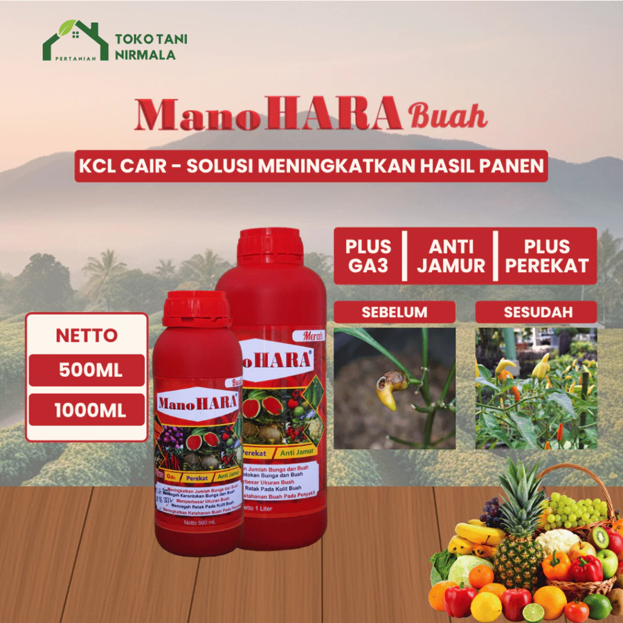

Katalog Produk
Temukan produk-produk terbaik dan berkualitas dari kami.

Etafit
SusuProduk susu herbal, diformulasikan untuk
membantu penyembuhan pernafasan. Diracik menggunakan bahan-bahan alami pilihan &
sudah halal MUI serta BPOM.

Etafit Gold
SusuEtafit Gold adalah susu kambing herbal
premium yang dirancang untuk menguatkan tulang, menjaga sendi, serta
membantu meredakan nyeri rematik secara alami.

Manohara Premium
KalsiumManohara Premium berfungsi untuk
mencegah kerontokan pada
daun, bunga dan buah. Juga mencegah penyakit jamur, busuk & layu pada tanaman.

Permata
KCLPermata membantu memperkokoh akar dan
batang tanaman, membantu dalam penyerapan air dan unsur hara, mencegah kerontokan
bunga dan buah.

DEWA-DEWI
KCLDewa Dewi berfungsi untuk merangsang
pembentukan bunga & bakal buah, memperpanjang umur produktif tanaman, serta
meningkatkan daya tahan tanaman.

Mano Mano
KCLMano mano merupakan pupuk KCL Cair untuk semua jenis
tanaman yang menyediakan nutrisi lengkap dan siap serap yang sangat dibutuhkan untuk
pertumbuhan tanaman.

Tridi Stick
PerekatTridi Stick adalah formula surfaktan khusus yang
berfungsi sebagai perekat, penembus, perata, dan pembasah universal untuk mengoptimalkan
kinerja penyemprotan pada tanaman.

Safiraa
PerekatPerekat Safiraa dapat digunakan dan dicampurkan dengan
berbagai jenis pestisida (herbisida, fungisida, inseketisida) dan juga pupuk cair lainnya.
Manfaat Perekat Safiraa :
1. Mengoptimalkan penyerapan pestisida dan pupuk ke dalam jaringan tanaman terutama pada
tanaman yang memiliki permukaan daun berkutikula (berlapis lilin dan berbulu)
2. Meningkatkan fungsi pestisida, pupuk daun dan zat pengatur tumbuh
3. Mengefektifkan penggunaan pestisida, pupuk dan zat pengatur tumbuh sehingga tersebar
merata dan menempel lama

Mila Stick
PerekatMila Stick adalah produk formula pembantu pestisida dan
pupuk cair yang dirancang khusus sebagai perekat, penembus, perata, dan pembasah untuk
memaksimalkan efikasi penyemprotan pada tanaman. Produk ini sangat cocok digunakan baik pada
fase vegetatif maupun generatif untuk memastikan nutrisi dan proteksi terserap sempurna ke
dalam jaringan tanaman.
Fungsi dan Keunggulan Utama Mila Stick:
Daya Rekat Kuat: Mencegah pestisida atau pupuk cair luntur oleh air hujan atau menguap
akibat panas matahari.
Menembus Jaringan Tanaman: Membantu menembus lapisan lilin atau bulu-bulu halus pada daun
sehingga obat langsung masuk ke sistemik tanaman.
Memaksimalkan Tingkat Efikasi: Meratakan penyebaran butiran semprot ke seluruh bagian
tanaman secara optimal.
Menghemat Penggunaan Pestisida: Meminimalkan pemborosan obat (pestisida, fungisida,
insektisida) karena formula bekerja jauh lebih efisien.

Regge Stick
PerekatRegge Stick adalah bahan pembantu (adjuvant)
non-pestisida berbentuk larutan yang dirancang khusus untuk meningkatkan efektivitas
penyemprotan pupuk, zat pengatur tumbuh (ZPT), maupun pestisida (insektisida, fungisida,
herbisida). Produk ini bekerja dengan cara mengurangi tegangan permukaan air secara optimal,
sehingga butiran semprot menyebar lebih merata dan melekat lebih lama pada permukaan
tanaman.
Fungsi Utama Regge Stick:
1. Mengefektifkan penggunaan pestisida dan pupuk karena cairan dapat tersebar merata dan
menempel jauh lebih lama pada tanaman.
2. Membantu mempercepat proses penembusan cairan semprot pada permukaan daun yang berlapis
lilin (waxy layers) maupun yang memiliki karakteristik berbulu.
3. Mengoptimalkan fungsi kerja pestisida, pupuk cair, dan zat pengatur tumbuh sehingga tidak
mudah tercuci oleh air hujan atau menguap karena panas matahari.

New Rekat
PerekatNew Rekat adalah formula khusus penembus, perekat, dan
perata non-ionik yang berfungsi untuk meningkatkan efisiensi kerja pestisida (insektisida,
fungisida, herbisida) serta pupuk daun. Kandungan aktif Sodium Lauryl Ether Sulfate 70%
bekerja efektif menurunkan tegangan permukaan air, sehingga butiran semprot menjadi lebih
halus dan menyebar merata ke seluruh bagian tanaman.
Mengapa Menggunakan New Rekat?
1. Meningkatkan dan mempercepat penetrasi insektisida, fungisida, dan herbisida ke dalam
jaringan tubuh tanaman maupun organisme pengganggu tanaman.
2. Mengoptimalkan penyerapan pupuk daun dan Zat Pengatur Tumbuh (ZPT) ke dalam jaringan
tanaman.
3. Membantu pembasahan pestisida dan pupuk daun, terutama pada tanaman yang memiliki
permukaan daun berlapis zat lilin atau berbulu.
4. Menurunkan tegangan permukaan air semprotan pada permukaan daun sehingga cairan tidak
mudah luntur oleh air hujan.
5. Memperkecil butiran semprot yang keluar dari nozzle, membuat penggunaan pestisida jauh
lebih hemat, efisien, dan merata.

You Stick
PerekatYOU Stick merupakan bahan perata, perekat, dan penembus
non-ionik berkualitas tinggi yang diformulasikan khusus untuk dicampurkan dengan larutan
insektisida, fungisida, herbisida, maupun pupuk cair. Produk ini bekerja aktif mengurangi
tegangan permukaan butiran semprot, sehingga larutan pestisida dapat menyebar secara merata
dan melekat lebih kuat pada seluruh bagian tanaman.
Mengapa Menggunakan YOU Stick?
Tanaman tertentu memiliki permukaan daun yang mengandung lapisan lilin atau berbulu halus
yang sukar ditembus air. Kondisi ini sering kali membuat pengaplikasian pestisida dan pupuk
daun menjadi tidak efektif karena larutan langsung luntur sebelum diserap. YOU Stick
mengatasi masalah tersebut dengan memecah resistensi permukaan daun secara cepat dan
aman.

Super Stick
PerekatNew Super Stick adalah bahan pencampur pestisida
(insektisida, fungisida, herbisida) dan pupuk cair yang berfungsi sebagai perekat, perata,
dan penembus daun. Fungsinya untuk menurunkan tegangan permukaan air semprot agar larutan
menyebar lebih merata, menempel lebih kuat, meresap lebih cepat ke dalam daun, dan tidak
mudah tercuci hujan, sehingga meningkatkan efektivitas penyemprotan serta menghemat
penggunaan pestisida/pupuk.

Djitoe
PerekatManfaat :
1. Meningkatkan dan mempercepat penembusan (penetrasi) insektisida, fungisida dan herbisida
kedalam jaringan tubuh tanaman maupun organisme pengganggu tanaman
2 Meningkatkan penyerapan pupuk daun dan zat pengatur tumbuh (ZPT) kedalam jaringan tubuh 3.
tanaman
3. Membantu pembasahan pestisida dan pupuk daun terutama pada tanaman yang berlapis zat
lilin dan berbulu
4. Menurunkan tegangan permukaan air semprotan pada permukaan daun
5. Memperkecil butiran semprot yang keluar dari nozle sehingga penyemprotan pestisida lebih
hemat dan merata

Astron
PerekatAstron adalah formula bahan pembasah, perekat, penembus,
dan perata non-ionik berkualitas premium. Produk ini dirancang khusus untuk dicampurkan
dengan larutan insektisida, fungisida, maupun herbisida guna menurunkan tegangan permukaan
butir-butir semprot pestisida secara optimal.
Dengan menggunakan Astron, larutan semprot akan tersebar merata dan melekat kuat pada
permukaan daun, bahkan pada jenis daun yang memiliki lapisan lilin atau berbulu halus yang
biasanya sukar ditembus oleh air.
Fungsi Utama Astron:
1. Meningkatkan kerekatan pestisida pada permukaan daun sehingga tidak mudah larut atau
luntur oleh air hujan.
2. Meningkatkan daya tembus insektisida, fungisida, dan herbisida ke dalam jaringan tanaman
atau tubuh hama.
3. Membantu menembus lapisan lilin alami pada daun dan kulit pelindung hama untuk efikasi
pestisida yang lebih maksimal.

Mano Sari Merah
PPCManosari Buah memiliki kandungan kalium yang tinggi yang
bermanfaat :
1. Memperkuat struktur daun dan perakaran pada tanaman
2. Merangsang pertumbuhan tunas baru
3. Memacu pertumbuhan vegetatif dan generatif
4. Meningkatkan kualitas dan kuantitas hasil panen
5. Meningkatkan ketahanan tanaman.

Liontin Stick
PerekatLiontin stick merupakan perekat yang bisa di aplikasikan
pada tanaman sayur sayuran atau buah buahan
Kandungan : Sodium Lauryl Ether Sulfate 70%
Manfaat :
1. Perekat yang bisa digunakan untuk untuk semua jenis Pestisida
2. Merekatkan Pestisida
3. Menambah Daya Sebar Pestisida Pada Daun
4. Meratakan Cairan Semprot
5. Menembus Bagian Jaringan Daun
6. Dapat digunakan di Musim Penghujan maupun Kemarau

Mano Sari NPK
PPCMano Sari NPK memiliki manfaat sebagai berikut :
1. Meningkatkan kesuburan dan jumlah daun
2. Menguatkan struktur daun tanaman
3. Menambah kekuatan akar semakin kokoh
4. Merangsang cepat tumbuh tunas baru
5. Menjaga ketahanan tanaman dari penyakit
6. Meningkatkan kualitas dan kuantitas jumlah hasil panen

Liontin NPK
PPCLiontin NPK memiliki manfaat sebagai berikut :
1. Memacu Pertumbuhan Vegetatif Dan Generatif Pada Tanaman
2. Mempererat Batang, Bunga Dan Akar Tanaman
3. Meningkatkan Ketahanan Pada Tanaman, Sehingga Tidak Mudah Terserang Penyakit
4. Meningkatkan Hasil Dan Kualitas Produksi

Super Soil
Asam Amino & HumatSuper-Soil Asam Humat Plus 1KG adalah solusi efektif
untuk memperbaiki kualitas tanah. Produk ini membantu menetralkan pH tanah yang asam dan
meningkatkan kapasitas tukar kation, sehingga tanah menjadi lebih subur dan produktif.
Dengan kandungan asam humat yang tinggi, produk ini juga mampu menggemburkan tanah dan
meningkatkan serapan nutrisi. Selain itu, Super-Soil mendukung pertumbuhan mikroorganisme
baik yang penting untuk kesehatan tanah. Cocok digunakan untuk berbagai jenis tanaman,
termasuk sayuran, buah, dan perkebunan.

Mano Stick
PerekatManfaat :
1. Mengefektifkan penggunaan pestisida dan pupuk karena dapat tersebar merata dan menempel
lama
2. Membantu dan mempercepat proses penembusan pada permukaan daun berlapis lilin dan berbulu
3. Mengoptimalkan fungsi pestisida, pupuk, dan ZPT
Cara Penggunaan :
Digunakan dalam dosis 0,25 – 0,5 cc/liter.

Windaa
KalsiumFungsi Windaa :
1. Meningkatkan ketahanan tanaman
2. Mencegah tanaman dari penyakit jamur, busuk, layu dan rontok
3. Merangsang pembentukan akar dan menguatkan batang
4. Meningkatkan kuantitas dan kualitas hasil panen
5. Memperbaiki kualitas bentuk dan warna buah
6. Memperpanjang daya simpan hasil panen
7. Menunda penuaan daun dan buah
Produk ini dapat diaplikasikan pada tanaman : Ketimun, Jagung, Kacang Panjang, Stroberi,
Wortel, Seledri, Melon, Kubis, Krisan, Padi, dll

Inti Grow
PPCFungsi Intigrow :
1. Meningkatkan pertumbuhan tanaman
2. Menguatkan struktur perakaran
3. Merangsang pertumbuhan tunas baru
4. Meningkatkan kualitas dan kuantitas hasil panen
5. Meningkatkan ketahanan tanaman terhadap hama dan penyakit

Manohara Mesh
KalsiumManoHARA MESH adalah pupuk kalsium berkualitas tinggi
(Calbor Fertilizer) yang diformulasikan dengan partikel sangat halus (MESH 2500 atau 4000)
agar mudah larut dalam air, berfungsi untuk mencegah kerontokan daun, bunga, dan buah,
mengatasi penyakit jamur dan busuk, serta meningkatkan kualitas dan kuantitas panen pada
berbagai tanaman dengan kandungan kalsium, boron, magnesium, dan seng.
Kandungan
CaCO3 71.35%, CaO 31.64%, MgO 8.92%, Zn 2.87%, SiO2 4.79%, + BORON 0.53%

99
KalsiumFungsi Kalsium Murni 99 :
1. Menetralisir kemasaman tanah
2. Meningkatkan kadar karbohidrat & gula dalam buah
3. Membuat tanaman lebih tahan terhadap hama dan berbagai penyakit
4. Membantu perkembangan akar, memperkuat batang & pembentukan serat buah
5. Mendorong produksi tanaman penghasil biji-bijian dan meningkatkan kualitas buah (bentuk,
kadar,& warna) menjadi lebih baik
Produk ini dapat diaplikasikan pada tanaman : Ketimun, Jagung, Kacang Panjang, Stroberi,
Wortel, Seledri, Melon, Kubis, Krisan, Padi, dll

Mano Calbor
KalsiumPupuk Kalsium yang memiliki kandungan mesh tinggi
sehingga akan larut sempurna. Mano Calbor dapat dicampur dengan pupuk lain. Apabila ditambah
perekat hasilnya akan semakin maksimal.
Mano Calbor mempunyai manfaat :
1. Mencegah Kerontokan Daun, Bunga, dan Buah
2. Menegakkan batang tanaman dan menguatkan akar
3. Menjaga tanaman dari rontok, busuk, dan jamur
4. Menghasilkan biji yang semakin padat berisi
5. Memperbaiki kualitas bentuk dan warna buah

Manohara Hijau
PPCPupuk Cair Manohara Hijau 1 Liter adalah solusi ideal
untuk meningkatkan pertumbuhan tanaman Anda. Dengan kandungan N-Total 5.2%, P2O5 2.3%, dan
K2O 14%, pupuk ini membantu memperbaiki akar, meningkatkan ketahanan tanaman, dan menguatkan
struktur daun. Selain itu, pupuk ini juga memperbaiki tekstur jaringan dan meningkatkan
jumlah daun serta buah.

Liontin Mesh
KalsiumManfaat :
1. Memacu pertumbuhan vegetatif dan generatif pada tanaman
2. Memperkuat batang, bunga dan akar tanaman
3. Meningkatkan ketahanan pada tanaman, sehingga tidak mudah terserang penyakit
4. Meningkatkan hasil dan kualitas produksi
Aturan Pemakaian :
– Bunga & Sayuran : semprot ( 3gr/liter air ) – kocor ( 15 gr/liter air )
– Buah & Palawija : semprot ( 5gr/liter air ) kocor ( 20gr/liter air )

d'Diana
Kalsium
Fungsi d’DIANA :
- Membantu perkembangan akar dan memperkuat tegaknya batang dan memacu pembentukan serat
buah
- Membuat biji tanaman menjadi padat berisi, merangsang pertumbuhan bunga, dan mempercepat
proses pematangan buah
- Meningkatkan ketahan tanaman terhadap serangan hama dan berbagai penyakit (jamur, busuk, &
kerontokan buah)
- Mendorong produksi tanaman penghasil biji-bijian; padi, jagung, kedelai, dll
- Meningkatkan kualitas bentuk, kadar, dan warna buah menjadi lebih baik

Premium LJS
Perekat
Kandungan : Sodium Lauryl Ether Sulfate 70%
Bentuk : Cair (Liquid)
Fungsi Premium LJS :
* Mengefektifkan penggunaan pestisida dan pupuk karena tersebar merata dan menempel lama
* Membantu dan mempercepat proses penembusan pada permukaan daun berlapis lilin dan berbulu
* Mengoptimalkan fungsi pestisida, pupuk, dan zat pengatur tumbuh

Niroga
MKP
Kandungan: Difosforus Pentoksida (P2O5) 16,69%, Kalium Oksida (K2O) 10,62%
Manfaat:
- Memperbanyak dan menyeragamkan pembungaan
- Menekan kerontokan bunga & mendukung pembuahan
- Memacu pertumbuhan akar lebih kuat
- Mempercepat fase generatif tanaman
- Mendukung fotosintesis tanaman

Manohara Buah
KCL
Fungsi ManoHARA Buah
1. Meningkatkan jumlah daun.
2. Menguatkan struktur perakaran.
3. Memperbaiki tekstur jaringan hidup.
4. Memperbanyak jumlah buah.
5. Meningkatkan daya tahan tanaman.